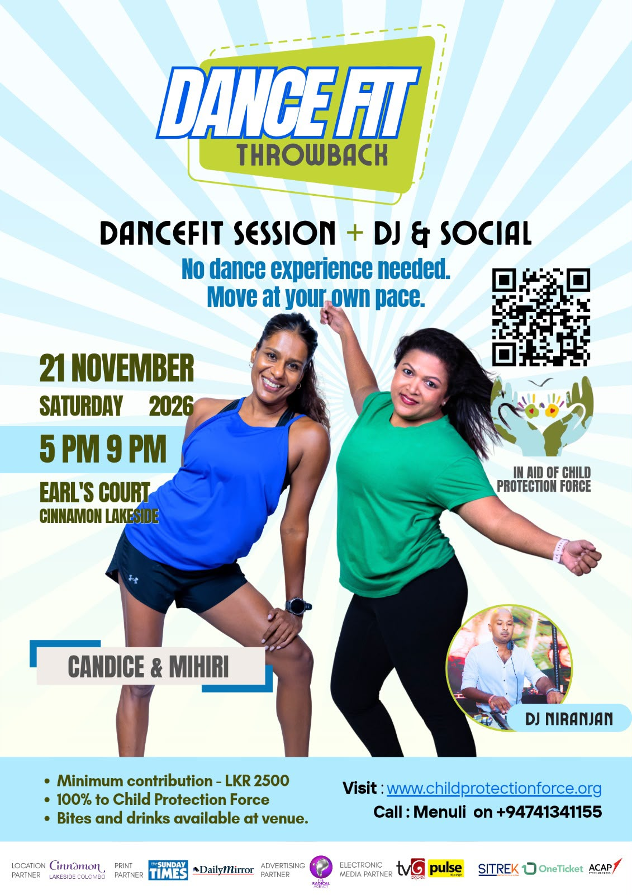
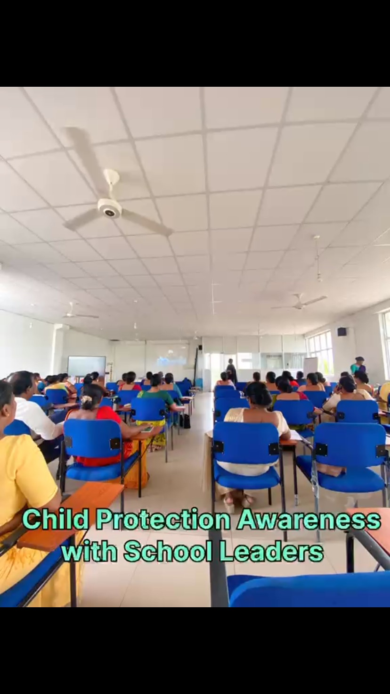

Dance Fit Throwback on Instagram
See the event announcement and the latest video from Child Protection Force.
Research, news coverage and interviews on child protection in Sri Lanka.

Dance fitness with Candice and Mihiri and music by DJ Niranjan, in aid of Child Protection Force.
21 November 2026 · 5–9 p.m.
Earl’s Court, Cinnamon Lakeside
No dance experience needed. Join at your own pace. Minimum contribution LKR 2,500, with all proceeds going to Child Protection Force.
Watch the Instagram reelResearch
Daily Mirror
Daily FT
Daily FT
The Morning
Roar Media
Roar Media
Video
Video
Video
Video
Video

Highlights from a child protection awareness programme for school principals in the Kelaniya Zone.

An awareness session for parents of Montessori children during World Children’s Month.

A full-day child protection awareness session for principals in the Sri Jayawardenepura Kotte education zone.